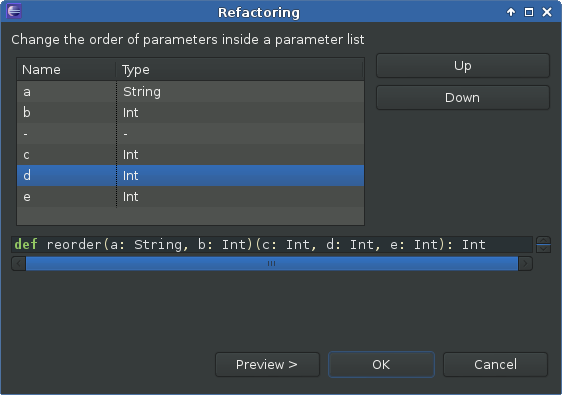
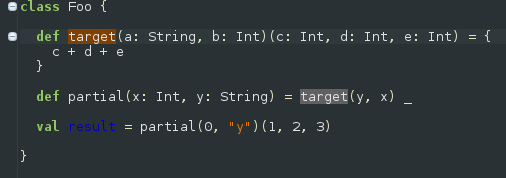
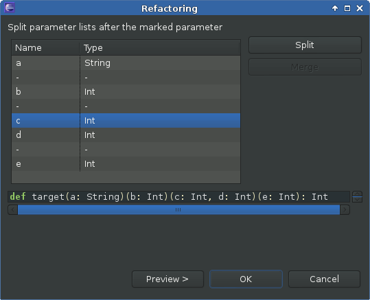
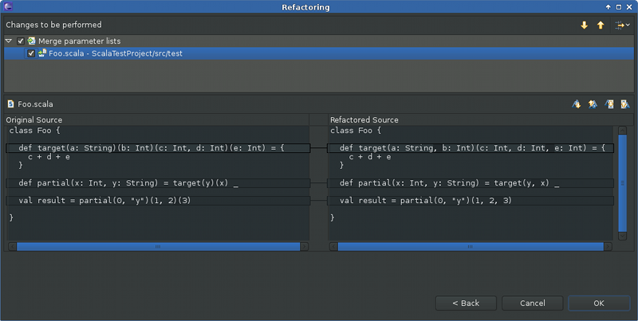
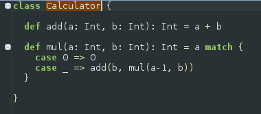
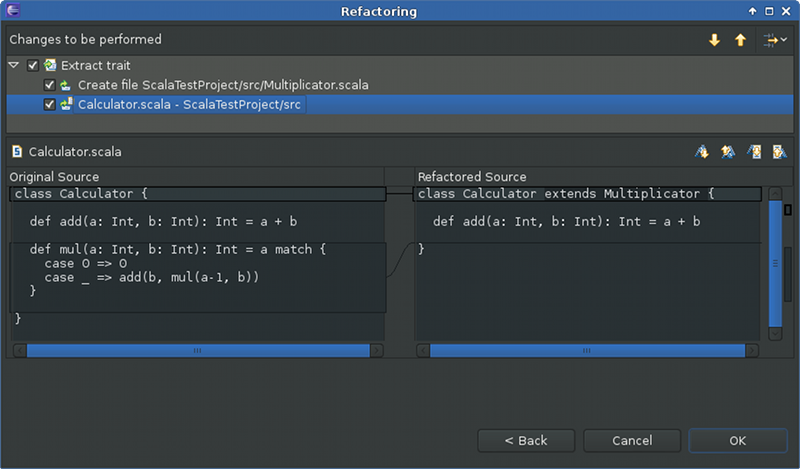

New Refactorings
Are you used to a lot of refactorings provided by your Java IDE? Well, we’re trying to close the gap, take a look at the new refactorings! All new refactorings are available using the usual refactoring menus.
Move Class, Object or Trait Refactoring
Move Class was an often requested feature in the Scala IDE bugtracker, so we implemented it for the upcoming 2.1 release. The refactoring can either be invoked from the Refactoring menu, or indirectly by drag-and-dropping a file in the Package Explorer.
If there exists more than one top-level declaration in the file, you can choose to split-off one of the declarations or to move them all. The refactoring will move all the necessary imports along, and also update all the references (other imports, or qualified names) in the project.
Here is a screenshot of the refactoring configuration dialog:

You can also create a new package directly in the wizard, and choose to move the complete file or only the selected definition (the option is not present if no definition was selected or if the file contains only a single one).
The resulting changes can then be previewed in the usual fashion:

A new file is created with the name of the moved class. In this preview, we can see that the class is removed in the file and an import to its new location is added because the class is referenced somewhere in this file.
Limitations
There currently are some limitations: the refactoring works only on Scala code, and it simply ignores visibility issues, so moving might result in compilation errors. This being the initial implementation, it is certainly not free of bugs, so please report any bug you encounter.
Method signature refactorings
All three method signature refactorings not only apply the refactoring to all usages of a method throughout the inheritance hierarchy, they also track its partial applications.
Change parameter order
The order of the parameters in your method should be changed? Change parameter order allows you to reorder method parameters inside each parameter list.
To reorder the parameters of a method select its definition:

In the refactoring dialog the parameters can be moved up and down in their parameter lists. The preview of the refactored method signature is always updated accordingly:
All changes are displayed in the preview dialog:

Limitations
Changing of parameter order currently doesn’t play well together with default and named arguments. This will hopefully be improved soon.
Split parameter lists
You want to partially apply your method but it has not enough parameter lists? Split parameter lists allows you to split parameter lists between each two parameters.
Again, just select the method to refactor:
In the refactoring dialog parameter lists can be split between each parameter pair using the Split button. A split can be reverted by using the Merge button.
And the resulting changes in the preview dialog:

Merge parameter lists
Your method doesn’t need multiple parameter lists? Being the inverse refactoring to Split parameter lists, Merge parameter lists merges parameter lists that don’t need to be split.
The refactoring dialog is very similar to Split parameter lists:

Having merged the right parameter lists we get back our original method signature from the beginning, before we applied the Split parameter lists refactoring:
Note that there are situations where parameter lists can’t be merged because they are partially applied. As an example, we can’t merge the remaining two parameter lists of the method reorder because of the partial application in the method partial:
Extract trait
Extract trait moves selected members from a class/object/trait to a new trait. If the new trait accesses non-private members of the original class/object/trait, a self type annotation is added to the new trait.
We start with a simple Calculator class:
We select the mul method for extraction in the dialog and give the new trait the name Multiplicator:

The class Calculator is changed accordingly:
The new trait Multiplicator uses the add method from Calculator, so a self type annotation needs to be added to Multiplicator:

Import statements are also handled: In the original class/object/trait all import statements that are not used after the extraction of the trait are removed, and in the extracted trait all needed import statements are added.
Limitations
The currently supported member types are: def, val and var. Others, as e.g. nested classes, are not (yet) supported.
Move constructor to companion object
You want to create a factory method such that the constructor of your class is not accessed directly, but tracking down and redirecting all constructor calls is cumbersome? Then Move constructor to companion object is here to help! It creates an apply method in the companion object (which is generated as well if necessary) that calls the constructor. All constructor calls get redirected to the new factory method.
As a simple example we start with a Target class and a class User that calls Target‘s constructor:

Selecting the Target class and applying the Move constructor to companion object refactoring creates a companion object and an apply method that wraps the constructor call. The constructor call in the User class is redirected to the new factory method.

Limitations
Currently this is only supported for the primary constructor (thus no refactoring dialog is needed), moving auxiliary constructors is not (yet) possible.